Нам понадобится:
1. Ключ свечной на 16. Стоят они по разному, в том магазине в котором покупал я было два таких ключа, отличались они только цветом ручки, у одного красная - 50руб, у другого синяя - 65руб. Я экономить не стал и прикупил ту что за 65руб.
2. Ключ гаечный на 10, торцевой. Рожковый не подойдет т.к. для откручивания пластикого кожуха нужен именно торцевой.
Такой как купил я стоит 35 рублей. Но цены определенной нет, и она может варьироваться в достаточно широком приделе. Может быть вы сразу решите приобрести супер-крутой набор за $500, это ваше дело.
Весь инструмент выглядит вот так:
3. Так же понадобятся свечи, ведь мы их и меняем. Это уже кто как пожелает, может захотите BOSCH, может ещё чего ни будь. У кого то стоят DENSO K16R-U11. Лично у меня стояли NGK BKR5EYA, я решил не менять производителя и купил точно такие же за 85руб - штука. Если кто не знает, нам их надо целых 4.
Итого по затратам на свечи и инструмент:
Итого - 440р.
Едем далее. Открываем капот, и кладем сверху на двигатель два ключа. Тогда у вас получится точно такая же картина (ну или почти такая же):
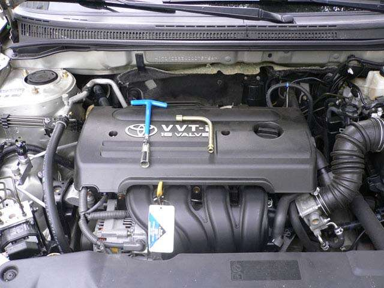
Берем ключик на 10 и откручиваем две гайки отмеченные красными кружками.
Вполне возможно, что гаек окажется не 2 а 4. Там сверху есть ещё 2 отверстия и в самой пластиковой крышке и в двигателе, но лично у меня там никаких гаек и шпилек не было.
А вы говорите "ТАЗ отстой" - Вон японцы тоже забывают вкрутить пару болтов.
В общем откручивайте. Лично у меня слева открутилась гайка, а шпилька осталась в двигателе, а справа выкрутилась шпилька из двигателя и осталась в пластиковой крышке.
Открутили? Теперь снимайте крышку. Перед вами предстанет двигатель нагишом по пояс (штаны то одеты).
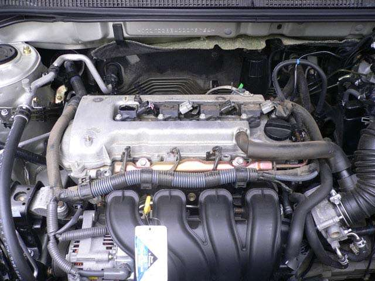
Взглянем поближе:
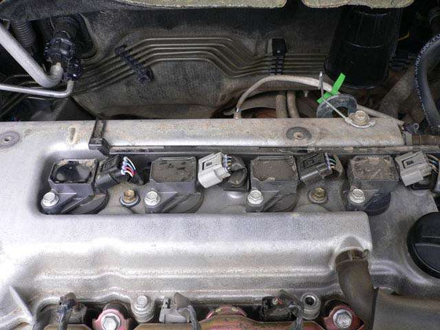
Вот это видимо и есть катушки зажигания, коих как я понимаю у нашей бурены аж четыре (это вам не ТАЗ).
Глядим ещё ближе:
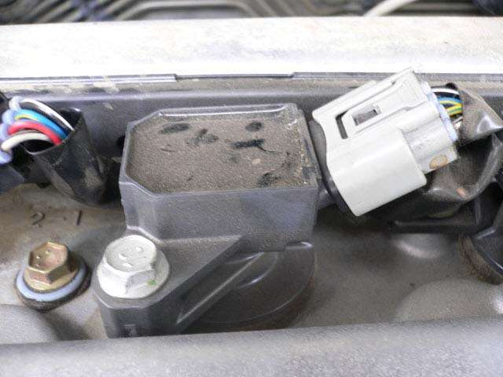
И видим болтик, который нам собственно и нужно открутить. На нем даже написано - 10. Это наверно что бы кЕтайцы при подделке не ошиблись.
Но перед тем как открутить болтик, следует снять клему с катушки зажигания:
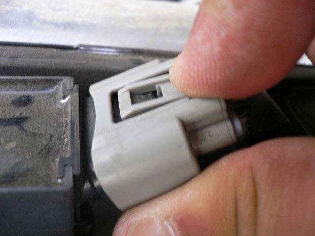
Делается это очень просто, нажимаем на специальную пимпочку-защелку и снимаем:
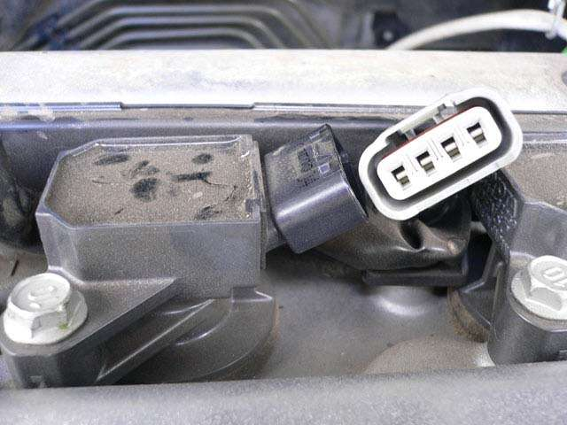
Теперь то можно открутить болтик, которым прикручена катушка к двигателю:
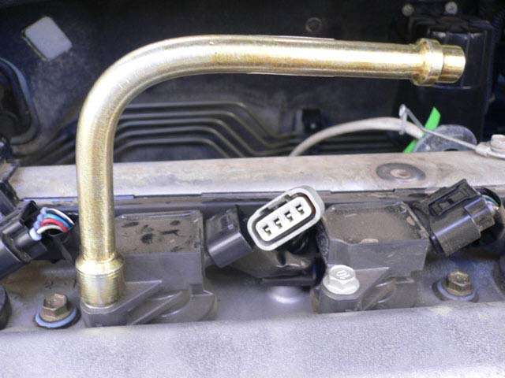
Теперь вытаскиваем катушку, кладем её куда нибудь и любуемся:
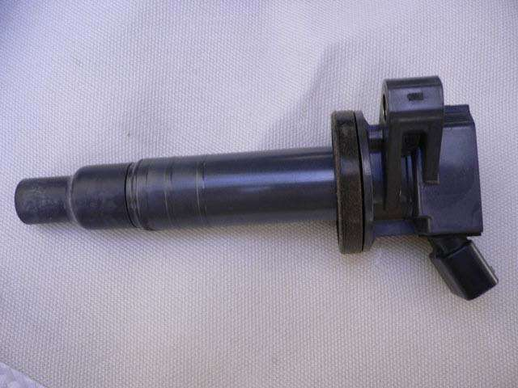
Так же, если есть желание можно заглянуть в отверстие, откуда вы вытащили катушку, там то и находится сама свеча:

Теперь необходимо взять свечной ключ, опустить в это отверстие и немножко надавить одновременно шурудя его то по часовой стрелке то против, чтобы ключ наделся на свечу.
Поясню зачем давить. В ключе есть резиновая втулка, в этой втулке фиксируется свеча, а иначе вы не вытащите свечу из этого колодца.
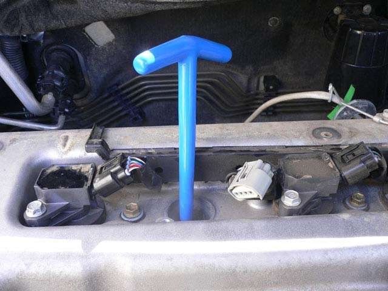
Теперь откручивайте. Напомню, ОТкручивать свечу необходимо ПРОТИВ часовой стрелки, а ЗАкручивать ПО, как в принципе и все гайки и болты.
Для того что бы открутить, а точнее сорвать свечу с места необходимо приложить некоторое усилие.
Открутили? Замечательно!
Теперь вытаскивайте свечник, он вытащится вместе со свечой:
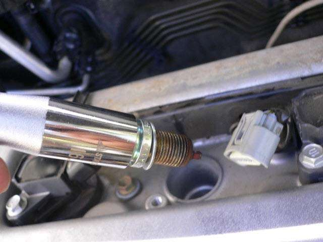
Можно положить новую и старую свечи рядом, и посмотреть. Как говорится найдите 10 отличий:
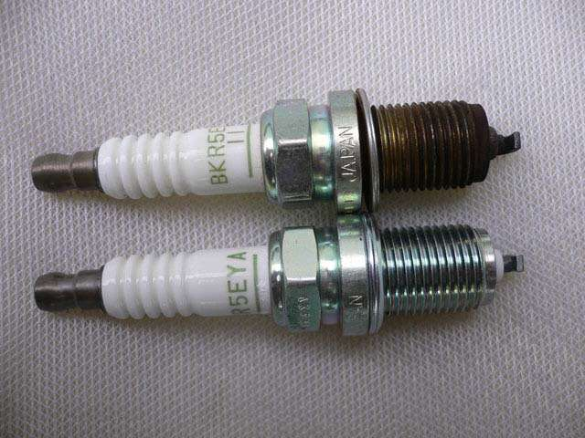
Вот в принципе и всё. Все остальные (три) свечи меняем точно так же.
Потом всё собираем в обратном порядке, не забывайте подключать клеммы на катушки зажигания.